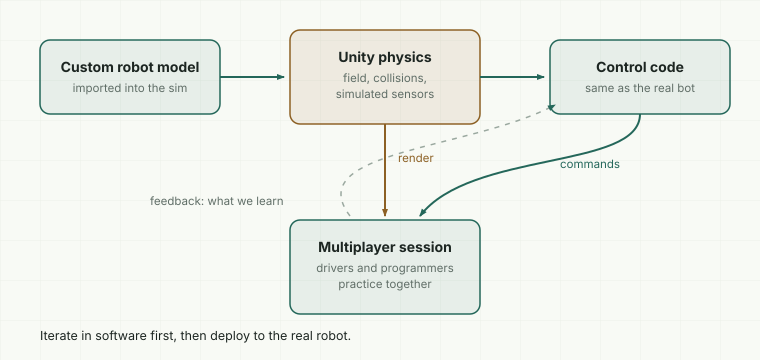
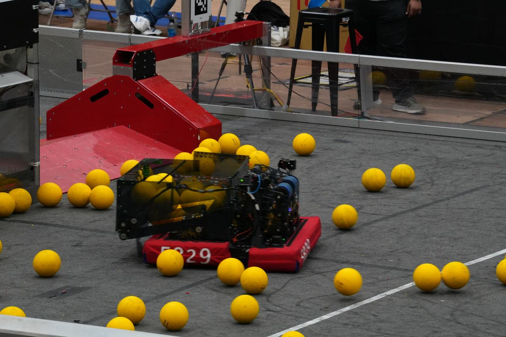
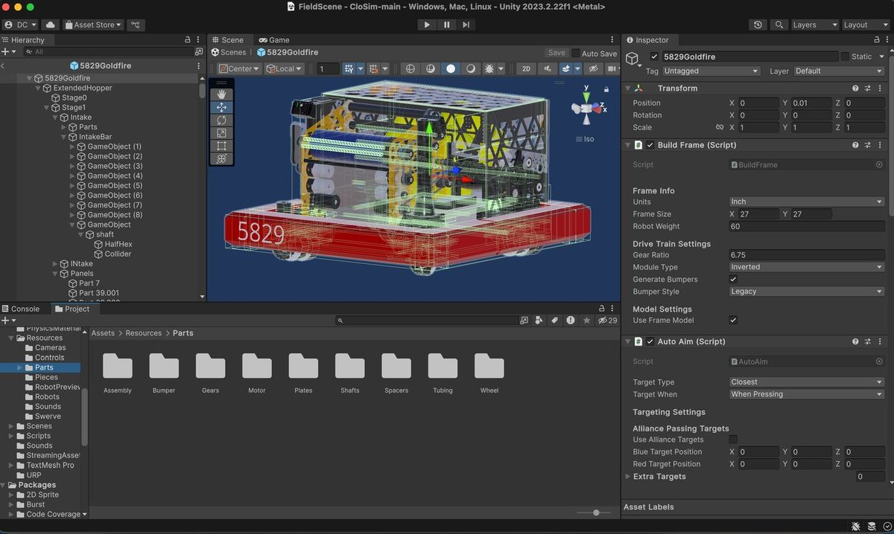

Robot simulator
I brought our team’s robot into CloSim, a Unity-based FRC simulator, so we could rehearse autonomous routines and practice shooting before the real robot was finished, instead of competing for time on one physical robot.
Why it exists
On an FRC team, the physical robot is the bottleneck. There is one of it, it is often half taken apart, and drivers, programmers and strategists all need time on it. A simulator removes that bottleneck. If the field, the robot and the controls live in software, people can practice in parallel, and a bad autonomous routine fails in the sim instead of breaking real hardware.

What I worked on
My focus was making the simulator match our real robot, so practice in the sim carries over to the field.


Robot model and build frame
I imported our 2026 robot into the sim and configured its build frame (frame size, weight, gear ratio and drivetrain) so it moves like the real thing. That way driver practice and autonomous tuning transfer to the physical robot.
Auto-aim targeting
I wrote the sim’s auto-aim script using the same velocity-compensated logic as my shoot-on-the-move code, so the simulated robot aims the way the real one does and drivers can practice realistic shots before touching the physical robot.
Multiplayer practice
I set up shared sessions so a driver and a programmer can be on the same simulated field at once, which is how real practice and strategy work actually happen.
See it run